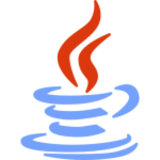

As 5 linguagens de programação mais utilizadas em 2022
1.Python

Python, por ser simples, vem ganhando muita fama nos ultimos anos, principalmente quando o assunto é: data science, big data, machine learning, e tambem desenvolvimento web. Criada em 1989 por Guido Van Hossum. Python é uma linguagem de Programação Orientada a Objetos(POO).Os arquivos python terão a extensão ".py" e os arquivos compilados terão a extensão ".pyc"
2.Java
Java é uma das linguagens de programacão mais utilizadas na atualidade, focado em desenvolvimento mobile, big data, Web Apps, Machine learning, IoT, Desktop. Criada em 1995 pela Sun MicroSystems, mas em 2008 foi adquirida pela Oracle por $7.4 Bilhões.Java também é Orientada a Objetos, e, para muitos, dificil de aprender, mas isso ja mudou muito com a evolução da linguagem.
3.JavaScript

JavaScript é um codinome do EcmaScript,Ecma(Europen Computer Manufacture's association) é uma associação global, por isso agora se chama Ecma international. Ela cria espeficações de padrões para a utilização da comunicação. Ele foi criado em 1995 como o nome de LiveScript, mas só dava pra validar formulários na época. A linguagem é feita para, desenvolvimento web, aplivativos web,criar servidores web e desenvolver aplicativos do servidor
4.C#

A linguagem C foi desenvolvida pela Microsoft como parte da plataforma .net, Também Orientada a Objetos, sendo uma linguagem multiplataforma, executada em varios dispotivos diferentes, focado em desenvolvimento de jogos, aplicativos de banco de dados e aplicativos de cliente-servidor. Foi a linguagem base para o desenvolvimento do Unity(plataforma para criação de jogos).
4.C++

C++ é uma linguagem orientada a objetos, baseado em C. Criada em 1979 e até hoje está sendo usada bastante por muita gente, A linguagem é de nivel médio, está no meio termo entre auto nível e baixo nivel(como o Assembly,por exemplo), focada desde , Sistemas Operacionais, até desenvolvimento de games. Nascendo pela necessidade de melhoria do núcleo do Unix